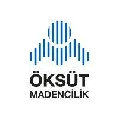
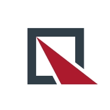

Below are details of my projects where I applied theoretical knowledge gained during my education and internships where I gained significant experience.
Graduation Project - Short-Term MEO Satellite Orbit Integration
2024 - 2025 | Hacettepe University | Supervisor: Assoc. Prof. Dr. Kamil Teke
- Developed a software tool to accurately predict short-term orbits of GPS satellites.
- Considered perturbing factors affecting orbital motion (e.g., Solar radiation pressure, geopotential).
- Utilized advanced computational techniques such as the Runge-Kutta method for numerical integration.

Summer Engineering Intern - Öksüt Mining
August 2024 - September 2024 | Develi/Kayseri
- Conducted drone mapping and data collection activities at the mining site.
- Performed precise measurements using Total Station and GNSS devices.
- Executed surface modeling and road design using AutoCAD Civil 3D.

Summer Engineering Intern - SNH Construction Inc.
July 2023 - August 2023 | Adana/Ceyhan
- Participated in tasks such as road leveling, bridge construction, and wall paving.
- Conducted field work using Total Station and GPS in a construction site environment.